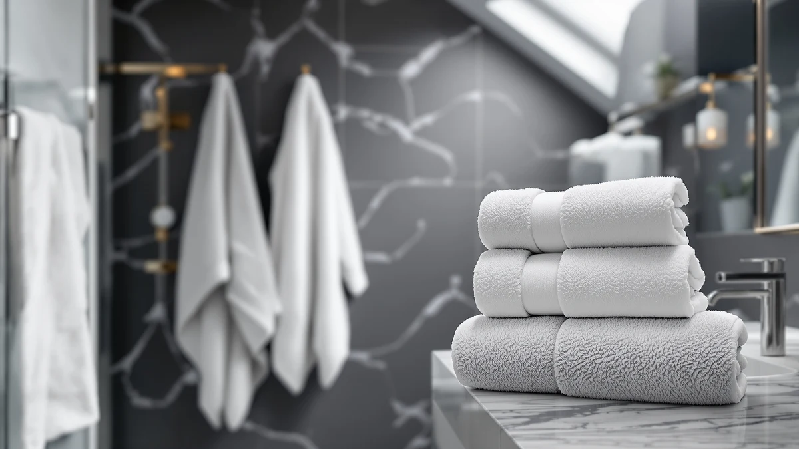

Superior Solid Egyptian Cotton Review (2026): Worth It?
Prices and picks verified as of September 2026. Independent, reader-supported reviews.


Quick Answer
This Superior Solid Egyptian Cotton review's pick delivers a straightforward two-pack of 100% cotton bath towels for $56.62, without the bundled extras or higher piece count you get from sets like the Jacquotha 8-piece below. It fits buyers who only need a couple of towels rather than a full restock.
Our pick: Superior Solid Egyptian Cotton Bath, $56.62 Check Price on Amazon
Bottom line: our top pick is the Superior Solid Egyptian Cotton Bath Towel Set at $59.99.
Things to Know Before You Buy
- This Superior Solid Egyptian Cotton set is sold as a bath towel two-pack at $56.62, not a larger bundle.
- Superior lists the material simply as 100% cotton, without a published GSM weight or thread count on this listing.
- Three alternatives in this review range from $52.19 to $66.99, a spread of under $15 across all four sets.
- None of the four listings compared here publish a public star rating or review count at the time of writing.
- The lowest per-towel cost in this comparison belongs to the 8-piece Jacquotha set, not the two-pack from Superior.
This Superior Solid Egyptian Cotton review breaks down what $56.62 buys you in a two-pack of bath towels, and it compares that price against three other cotton and blended sets people ask about most. Superior keeps the pitch simple: 100% cotton, sold as a bath towel two-pack, without the extra pieces or price tag of a full family set. You get a straightforward accessory rather than a complete restock, and that trade-off shapes almost everything else in this comparison.
Three alternatives appear later in this review as direct comparisons: RUBBER BOND's Mr and Mrs set at $54.95, a Bumble Towels oversized set at $66.99, and an 8-piece Jacquotha set in black and ivory at $52.19. Prices across all four run from $52.19 to $66.99, a gap of under $15, so the real differences come down to pack size, styling, and how each brand positions its cotton rather than a steep jump in cost. None of these listings publish a public star rating or review count at the time of writing, which is why this comparison leans on what each listing documents: material, pack size, and price, instead of secondhand testing claims. That documentation gap matters more here than it would on a set with hundreds of verified reviews backing it up, since buyers are weighing four listings largely on their word.
Why You Should Trust Us
Ilane Tall covers bath and home textiles for Best Bath Towels and spends her time comparing towel specs, materials, and pricing across hundreds of Amazon listings rather than running a physical test lab. For this Superior Solid Egyptian Cotton review, she cross-checked the listed material, pack size, and price for the Superior set against three competing towel sets to see where the real differences sit. We do not claim to have washed, dried, or handled these towels ourselves, and we say so plainly instead of dressing up a listing description as something it isn't. When a spec isn't published, such as thread count or GSM weight, we note the gap rather than guessing at a number that sounds convincing. That approach means this review sometimes says less than a marketing page would, but what it does say holds up against the listing it came from.
Our Research Experience
Rather than running physical trials, our process for this Superior Solid Egyptian Cotton review centered on comparing what each brand actually documents. We pulled the material claim, the pack size, and the price for the Superior set directly from its listing, then checked those same three data points against RUBBER BOND, Bumble Towels, and Jacquotha to see how a $56.62 two-pack stacks up against sets priced from $52.19 to $66.99. None of the four listings in this comparison publish a verified star rating or review count, so instead of inventing buyer sentiment, we built this review around the parts every listing documents: material, pack count, and price. Where a listing left out a detail, like a specific color option or a fabric weight, we left that gap in the review rather than filling it with an assumption.
Overview & Specs

Superior Solid Egyptian Cotton Bath
What we like
- 100% cotton construction with a straightforward material claim
- Two-pack size fits buyers who only need to replace a couple of towels
- Priced under $60 for a plain cotton pair
- Simple listing without a confusing bundle of add-on pieces
Flaws but not dealbreakers
- No published GSM, thread count, or weight figure on this listing
- Costs more per towel than 8-piece sets like the Jacquotha option below
- No public star rating or review count documented on this listing
- Two towels only, so it won't restock a full bathroom by itself
| Material | 100% cotton |
| Size | Bath Towel 2-Pack |
The two-pack format is the detail that separates this Superior Solid Egyptian Cotton review's subject from most of the sets covered elsewhere on this site. At $56.62, you're buying two bath towels rather than a six- or eight-piece set, which pushes the per-towel price well above sets like the Jacquotha 8-piece below. Superior lists the material simply as 100% cotton, without a separate GSM or thread-count figure attached to this listing, so buyers comparing sets on fabric weight alone won't find that number here. The listing also doesn't specify a color option beyond the generic product name, so shoppers who care about matching a specific bathroom palette should confirm that detail on the product page before ordering.
What the listing does make clear is the size, sold as a bath towel two-pack rather than bundled with hand towels or washcloths. That narrows the use case: this is a set for someone who wants to add or replace a couple of bath towels, not restock an entire bathroom. Compared with the $66.99 Bumble Towels oversized set or the $52.19 Jacquotha 8-piece below, the Superior set sits in the middle of this group on price while offering the smallest piece count, so the value case rests almost entirely on the cotton construction rather than volume. For a single bathroom refresh, that trade-off is easier to justify than it would be for someone trying to outfit a whole household at once.
What We Liked
What stands out in this Superior Solid Egyptian Cotton review is how little the listing tries to oversell. Superior doesn't bundle in extra pieces to inflate the perceived value; it sells exactly two 100% cotton bath towels at $56.62 and lets the material claim speak for itself. That simplicity makes it easy to compare against the other three sets in this review on a pound-for-pound basis, since you're not weighing a two-piece set against someone else's eight-piece bundle. For a buyer who only needs to replace one or two towels, that focus is the main selling point rather than a drawback, and it keeps the total cost predictable compared with sets that pad piece count to justify a higher price.
What Could Be Better
The biggest gap in this Superior Solid Egyptian Cotton review's subject is missing documentation. The listing states 100% cotton but doesn't publish a GSM weight, thread count, or specific color option, so buyers who care about how thick or absorbent a towel feels on paper won't find that answer here. The price also works out to over $28 per towel, noticeably more per piece than the $52.19 Jacquotha 8-piece set, which comes to well under $10 per towel. And with no public star rating or review count attached to this listing, there's no verified buyer feedback to weigh against the manufacturer's own description, which puts more weight on the bare material claim than most shoppers would prefer before spending over $50.
Who Is It For?
This Superior Solid Egyptian Cotton review points toward a narrow but clear buyer: someone who needs exactly two bath towels, not a full set, and who prioritizes a plain 100% cotton claim over a longer spec sheet. If you're restocking a guest bathroom with a couple of towels or replacing a worn-out pair without committing to a bigger bundle, the $56.62 price is easy to justify. Buyers who want documented fabric weight, a specific color choice, or a larger piece count for the money should look at the alternatives covered next, particularly the Jacquotha 8-piece set, which spreads a lower total price across four times the towels.
Alternatives to Consider
If the two-towel format in this Superior Solid Egyptian Cotton review's subject doesn't match what you need, these three alternatives cover different directions: a novelty-styled set from RUBBER BOND, a larger oversized towel from Bumble Towels, and an 8-piece black-and-ivory set from Jacquotha that spreads the cost across more pieces. Each one trades away the Superior set's simplicity for a different size, style, or price point, so the right pick depends on whether you value piece count, styling, or a single oversized towel more than a plain cotton pair.

Editor's Pick
RUBBER BOND Mr and Mrs
A novelty-styled Mr and Mrs set from RUBBER BOND priced slightly under the Superior pick, worth a look if a matched-pair design matters more to you than a plain cotton towel.
$54.95
Check Price on Amazon
Best Value
Luxury Oversized Bath Towels |
An oversized towel from Bumble Towels at the top of this group's price range, aimed at buyers who want more towel surface than Superior's standard two-pack covers.
$66.99
Check Price on Amazon
Premium Choice
8 Piece Black and Ivory
An 8-piece black-and-ivory set from Jacquotha that costs less overall than the Superior two-pack while spreading the price across far more pieces per towel.
$52.19
Check Price on AmazonIs the Superior Solid Egyptian Cotton Bath towel actually Egyptian cotton?
The listing name references Egyptian cotton, but the documented material on this specific listing is simply 100% cotton, without a separate certification or fiber-origin claim attached to back that name up.
How does the price compare to the other sets in this review?
At $56.62 for two towels, this Superior set costs more per towel than the $52.19 Jacquotha 8-piece set and sits below the $66.99 Bumble Towels oversized option.
Frequently Asked Questions
Is the Superior Solid Egyptian Cotton Bath towel actually Egyptian cotton?
How does the price compare to the other sets in this review?
Is a two-pack of bath towels worth it over a larger set?
Final Verdict
The verdict from this Superior Solid Egyptian Cotton review is straightforward: at $56.62, you're paying for a simple, documented 100% cotton two-pack rather than a large bundle, and Superior's listing doesn't oversell that with extra claims it can't back up. If you only need two bath towels and want a plain cotton option without digging through a bigger set's worth of pieces, this SUPERIOR pick delivers exactly what it promises. If you want more towels for a similar or lower total price, the Jacquotha 8-piece set covered above is worth comparing before you buy, and if styling matters more than raw cotton content, the RUBBER BOND or Bumble Towels options fill that gap instead.